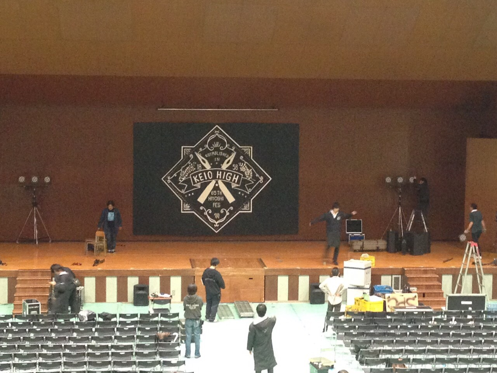
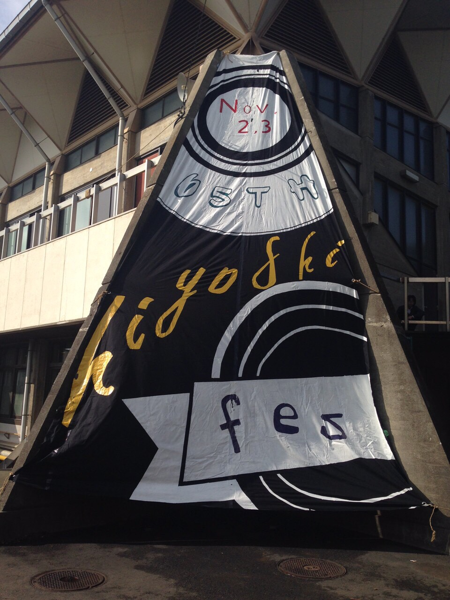

実行委員の活動報告へようこそ！
皆様が日吉祭にいらっしゃるだけではわからないことや、 委員の努力をこの場をお借りして報告致します。
日吉祭実行委員会宣伝パート一同
舞台幕の作成
グラウンドの隣にある日吉会館のステージ奥の壁には毎年、 日吉祭実行委員手作りの舞台幕が飾ってあります。
↓昨年の舞台幕↓
現実世界では3日間かかっていますが、今回はその作成の裏側を流行りのタイムラプス（スマートフォンでの撮影方法） で2分ほどにまとめましたので、どうぞご覧ください。
台形幕の作成
またまた幕の話です
日吉祭では毎年、日吉会館の前に台形の幕が飾られます。 そして、この台形幕も実行委員の手作りです。
↓昨年の台形幕↓
こちらも短くまとめた動画をご用意したので、ご覧ください。
現実世界では3日間かかっていますが、今回はその作成の裏側を流行りのタイムラプス（スマートフォンでの撮影方法） で2分ほどにまとめましたので、どうぞご覧ください。